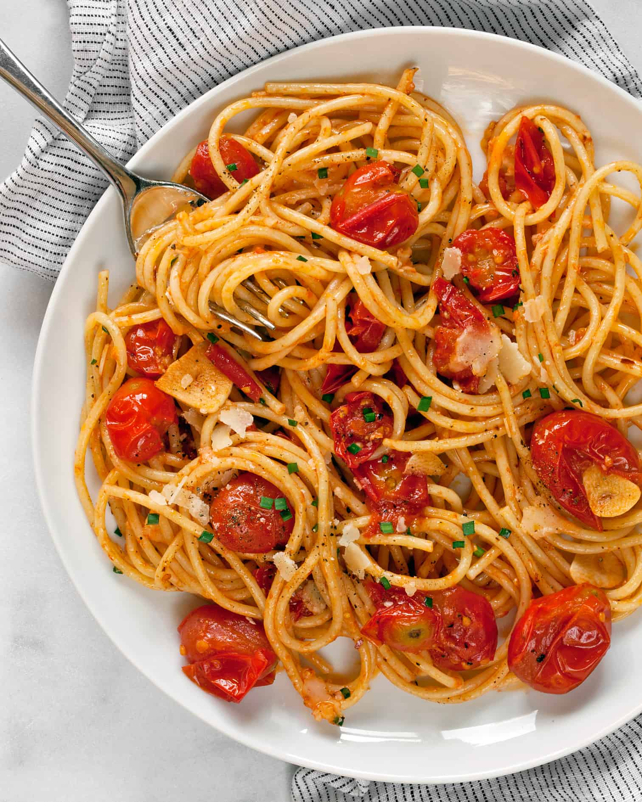

Bursting Cherry Tomatoe Pasta

Description
This pasta uses sweet and tangy cherry tomatoes as a pasta sauce,
full of garlic and rich olive oil. Different cherry tomatoe varietys
can provide different taste, so I reccommend finding a smaller variety.
This recipe was introduced to me by my brother, and since then I have not gone
back to marinara. It requires few ingredients and can be stored for future use.
Great for tomatoe lovers like my dad!
Ingredients
- 1 packet of cherry tomatoes
- 1/2 cup of olive oil
- 1 pound pasta of choice
- 2 tbps of minced garlic
- Few Basil Leaves
- 1 tsp of sugar
- 1/2 tbps of salt
- Fresh ground black pepper to taste
- Chili flakes to taste
Steps
- Heat olive oil in walled pan
- Add cherry tomatoes to pan and cover to prevent splattering
- Once a few tomatoes have burst, add garlic, basil, sugar, salt, chili flakes and black pepper
- Cover again. Occassionaly stir, and crush tomatoes as needed. Let simmer while pasta is cooking
Cook pasta according to packet directions
- Combine cooked pasta with sauce, and top with fresh basil. Serve!